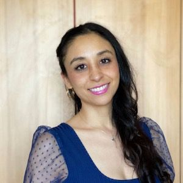
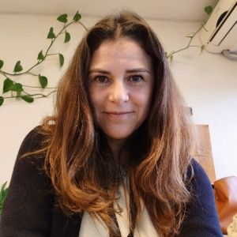
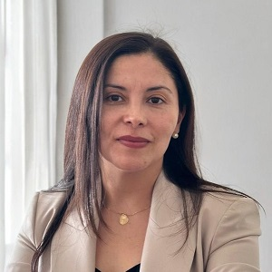
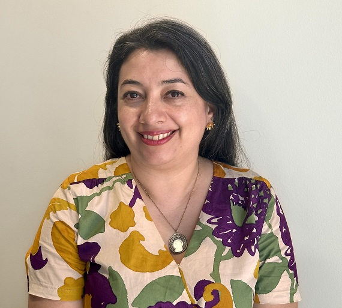
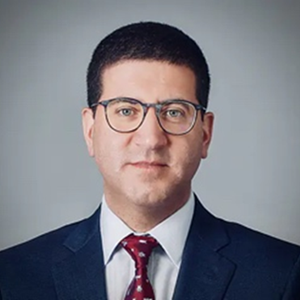

Sergio Celis, Ph.D
Associate ResearcherUniversidad de Chile
Associate Professor at the Faculty of Physical and Mathematical Sciences, Universidad de Chile. He researches engineering and science education, the sociology of scientific disciplines, internationalization, and knowledge transfer.



Mario Alarcón, Ph.D
Associate ResearcherUniversidad Diego Portales
Assistant Professor in the Faculty of Social Sciences and History at UDP. His research interests encompass the sociology of professions, labor transformations, and the working conditions of academics in the knowledge society.